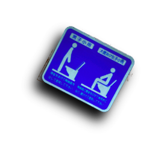
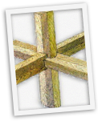

Syllabi



Teaching
I know from my experiences both as a teacher and student that the best way to interest students and encourage learning is to make subjects resonate in their daily lives. This means providing enough textual, visual, and historical context in order to evoke responses and to raise issues that are both attuned to the culture that produced them and relevant to students today. By fostering sensitivity to both students’ own present point of view and historical receptions through exposure to myriad media, I hope to engender excitement about previously inaccessible or daunting topics. The energy created from doing so necessarily can be harnessed for the other tasks of teaching about distant cultural products, clean writing, argumentation, and critical thinking.
